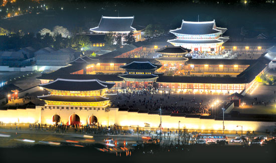

景福宫
景点地址:
대한민국 서울특별시 종로구 종로1.2.3.4가동 사직로 161
开放时间：
1月-2月、11月-12月9:00-17:00，最后入场时间16:00；3月-5月、9月-10月9:00-18:00，最后入场时间17:00；6月-8月9:00-18:30，最后入场时间17:30；周二休馆。
服务承诺：
如实描述 低价保障 入园保障 特殊退订保障
还没去北京游览故宫，先来首尔看了昌德宫和景福宫，据说韩国的皇宫比故宫小很多，而景福宫已经让我觉得很宏伟了，故宫一定要去参观一下了
特色1：《拥抱太阳的月亮》取景地
----------------------------------------------------------------------------------------------------------------------------------------------------------------------------------------------------------------------------------------------------------------------------------------
景福宫坐落于繁华的首尔市中心的一角，是朝鲜建国初期建造的首座宫殿。景福宫一年四季美景各异，春有樱花，夏有绿树，秋有银杏，冬有白雪。《大长今》、《屋塔房王世子》、《来自星星的你》等韩剧曾在此取景。景福宫东面是建春门，西面是迎秋门，北面是神武门，南面是光化门。光化门是景福宫的正门，有着精巧的工艺、巧妙的结构及壮丽的外观。守门将交接仪式很值得观看，还原了朝鲜时代换岗仪式的场景。

人文历史:
----------------------------------------------------------------------------------------------------------------------------------------------------------------------------------------------------------------------------------------------------------------------------------------
景福宫（韩语：경복궁；英语：Gyeongbokgung Palace），是朝鲜半岛历史上最后一个统一王朝——朝鲜王朝（李氏朝鲜）的正宫（法宫）。位于朝鲜王朝国都汉城（今韩国首尔），又因位于城北部，故又称“北阙”，是首尔五大宫之首，朝鲜王朝前期的政治中心。 景福宫始建于1395年（太祖洪武二十八年），历经多次破坏和重建。王宫得名于《诗经》中“君子万年，介尔景福”中“景福”二字。王宫面积与规制严格遵循与宗主国中国的宗藩关系，为亲王规制的郡王府，所有建筑均以丹青之色来区别于中国皇宫的黄色。占地面积占地12.6万坪（57.75公顷），呈正方形，南面是正门光化门，东为建春门，西为迎秋门，北为神武门。 1910年日本吞并朝鲜半岛。1926年，日本在景福宫前建造朝鲜总督府。朝鲜日治时期，景福宫的大多建筑都相继遭到拆除，仅保留正殿勤政殿、庆会楼等象征意义的建筑物。 1995年韩国光复50周年之际，金泳三政府以恢复本国传统文化，“清除日本统治时期象征”为由拆除日占时期建筑，原址开始大规模复建景福宫及其附属建筑。2010年8月，韩国再次复建光化门，由原先所谓“去中国化”的谚文匾额恢复为传统的汉文牌匾。
风俗习惯:
----------------------------------------------------------------------------------------------------------------------------------------------------------------------------------------------------------------------------------------------------------------------------------------
韩国与中国一样被誉为“礼仪之邦”，文化与礼仪交集，除了特色节日习俗之外，韩国人在生活中也体现着韩国人的特色生活习俗。韩国人与中国人一样，多数信奉佛教，崇尚儒家文化，因此在很多方面与中国相似。吃饭的时候也用筷子汤匙，喝酒的时候一定要侧身表示礼貌，见到长辈要弯腰行礼，跟中国一样，他们也过春节、端午节、中秋节等节日。
特产推荐:
----------------------------------------------------------------------------------------------------------------------------------------------------------------------------------------------------------------------------------------------------------------------------------------
与中医理论相反，韩国有“反季进补”的说法，由于夏季人体水分和营养随汗液快速代谢，从而容易体虚，因此韩国人多在夏季进食参鸡汤。而作为韩国代表美食之一的参鸡汤，店面繁多，今天为大家介绍的是在韩国可谓家喻户晓的老店——“土俗村”参鸡汤。
土俗村参鸡汤店内不仅有传统参鸡汤、烤全鸡、乌骨参鸡汤、还推出了加入一百年山参培养根和高丽人参共同炖制的山参培养根参鸡汤、山参培养根乌骨鸡汤，在营养上更上一层楼。除了这些，店内还有海鲜葱饼、辣烧鸡汤（2~3人份）、漆鸡汤、辣炖安康鱼（2人分/3人份）等。并且店内还有自己独家制作的人参酒，并对外出售，好酒的人千万不要错过。
当地酒店:
----------------------------------------------------------------------------------------------------------------------------------------------------------------------------------------------------------------------------------------------------------------------------------------
民宿：100岁,韩国传统家庭, 1-2人, 私人厕所

----------------------------------------------------------------------------------------------------------------------------------------------------------------------------------------------------------------------------------------------------------------------------------------
设施/服务:
一家宾馆,共有4间客房,这是其中之一｡
基础设施
无线网络 - 每天,不同的韩国传统早餐
- 1-2位客人(3位客人不提供)
独立房间:
有自己的独立房间，与他人共享客厅等空间
入住/退房:
入住时间 15:00后 · 退房时间 11:00
烘干机 生活必需品
暖气 洗衣机
厨房用品 厨房
早餐 床和浴室
吹风机 衣架
洗发水 安全设施
灭火器 一氧化碳报警器
烟雾报警器 急救包
----------------------------------------------------------------------------------------------------------------------------------------------------------------------------------------------------------------------------------------------------------------------------------------
酒店：明洞★Basecamp803★市景阁楼+Free WiFi
----------------------------------------------------------------------------------------------------------------------------------------------------------------------------------------------------------------------------------------------------------------------------------------
设施/服务:
整套房子/公寓:独享整个房源，无需与房东或他人共住
基础设施
无线网络 入住/退房，入住时间: 15:00后 ·
退房时间: 12:00
自助入住:通过密码锁自助入住
熨斗 有线电视
生活必需品 书桌/工作区域
综合设施 电梯
厨房用品 厨房
基本厨具 盘子和餐具
冰箱 炉灶
房客使用权限 密码锁
独立入口
用户点评:
----------------------------------------------------------------------------------------------------------------------------------------------------------------------------------------------------------------------------------------------------------------------------------------
5分外观有点像故宫，内里是席地而坐，空地上看到了正六品正七品的石牌，很多人租借了韩服进场拍照，但是非常抱歉我对宫殿兴致缺缺。
Emmy9421 2019-09-21 11:32
5分
경복궁은 한국에서 유명한 유적인데요 표가격도 싸다
王刘长老 2019-09-18 22:57
4分
韩国的小故宫 比起我们的故宫 的确不是一点档次的事 不过也挺有特色
Abby223 2019-09-18 09:49
5分
预计花2个小时参观，但是买好门票进入景福宫后会发现2个小时实在不足够。占地很大，虽然里面剩下/重建后的建筑物没有超级多，但是要走一圈也要花很长时间，再加上仔细观看展板上的介绍，等拍照的时间（人太多），下次再来的时候会预留半天。
M34****9559 2019-09-15 16:41